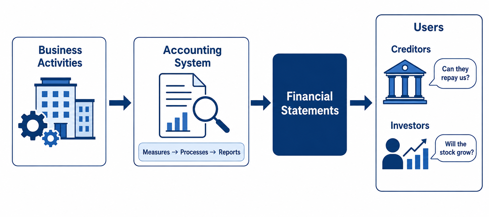

Welcome to the World of Accounting
Throughout this textbook you will see small tags next to the headings. They open the lecture video and start playing at the point where that material is discussed, so you do not have to hunt through a 50-minute recording. Hovering over a tag tells you which lecture it is and at what time.
▶ Watch this topic — the lecture where I
explain the idea.
▶ Slides & example — where I
go over the same material on the PowerPoint slides, usually with a worked example. When
both tags appear, watch the explanation first and use the slides to review.
Every chapter also opens with a Video lectures for this chapter panel listing every topic in the chapter's videos — click the arrow to expand it.
One caveat: Timestamps are approximate — a topic may begin a few seconds before or after the mark, so step back a little if you land mid-sentence. The times were taken from the lecture transcripts, which mark where a discussion begins rather than the exact frame, so treat them as a very close starting point rather than an exact cut.
Each link opens the lecture video at that topic. Timestamps are approximate — a topic may begin a few seconds before or after the mark, so step back a little if you land mid-sentence.
This textbook is designed as a companion to the ACCT 2101 video lecture series. Each chapter in the textbook corresponds to a set of video lectures that break down the material into manageable parts. For most chapters, the video lectures follow a consistent pattern: first, the core concepts are introduced and explained in detail; then, the corresponding PowerPoint slides are reviewed to reinforce and summarize those concepts.
Each chapter is divided into multiple parts for a reason. Some topics require deeper explanation before moving on. We recommend studying the material sequentially—watch the conceptual lecture first, then the PowerPoint review, and read the corresponding chapter here alongside both. If a topic has been covered in the conceptual lecture, the PowerPoint review may skip over it. It is your responsibility to ensure you understand all the material, including any slides not explicitly discussed in the videos.
To give you a sense of the structure, here is how the lectures are typically organized for each chapter:
Accounting is often called the language of business. Just as a spoken language enables people to communicate ideas, accounting enables market participants to communicate financial information. Specifically, accounting is an information system that measures business activities, processes that information into reports, and communicates the results to decision-makers through financial statements.
Accounting — An information system that measures business activities, processes data into reports, and communicates financial results to decision-makers.
Because accounting serves as the universal language of business, it is a foundational subject for all business students—regardless of whether their major is marketing, strategy, finance, or management. Understanding this language is essential to interpreting the financial health and performance of any organization.

Accounting is broadly divided into two branches, each serving a different set of users:
| Financial Accounting | Managerial Accounting | |
|---|---|---|
| Course | ACCT 2101 | ACCT 2102 |
| Users | External (creditors, investors, taxing authorities) | Internal (managers, employees) |
| Purpose | Report financial position and performance to outsiders | Provide information for budgeting, planning, and strategy |
| Focus | Past performance (historical data) | Future planning (forecasts, budgets) |
This course—ACCT 2101—focuses exclusively on financial accounting. Financial accounting examines the firm from the perspective of external users, primarily creditors and investors. These external parties provide financing to the company, and in return, they need reliable financial information to assess whether the firm can repay its debts and generate returns on their investments.
Why do creditors and investors need financial statements? Because people don't just hand over their money for nothing. Before providing capital to a company, they need to verify that the company has a solid financial record and good performance—so they can be confident their money will be returned in the future.
The ultimate goal of this course is to equip you with the ability to analyze financial statements. However, meaningful analysis requires a deep understanding of what financial statements contain and how they are constructed. For this reason, the course begins with the preparation of financial statements before moving to analysis.
By first learning how to prepare financial statements, you will understand exactly what goes into them. This foundational knowledge then enables you to interpret and evaluate those statements with confidence.
The course is organized into three major phases, each building upon the previous one:
Phase 1: Basic Concepts (Chapter 1). Chapter 1 introduces the fundamental building blocks of accounting—the accounting equation, types of business organizations, and the structure of financial statements. This chapter lays the conceptual groundwork for everything that follows.
Phase 2: The Accounting Cycle (Chapters 2–4). Chapters 2, 3, and 4 walk through the complete accounting cycle: recording transactions, making adjusting entries, and preparing financial statements. These chapters are the heart of the course.
Phase 3: Specific Accounts (Chapters 5–13). The remaining chapters examine specific accounts within Assets, Liabilities, and Stockholders' Equity. Each chapter addresses the unique issues that arise when recording, reporting, and analyzing these individual items.
Chapters 1 through 4 are your foundational chapters. This material is highly sequential—much like mathematics. If you do not study these chapters thoroughly, there is no way to understand the topics that come after Chapter 4. You must master Chapter 1 before moving to Chapter 2, and Chapters 1 and 2 before Chapter 3, and so on. Take the time to build a strong foundation here.